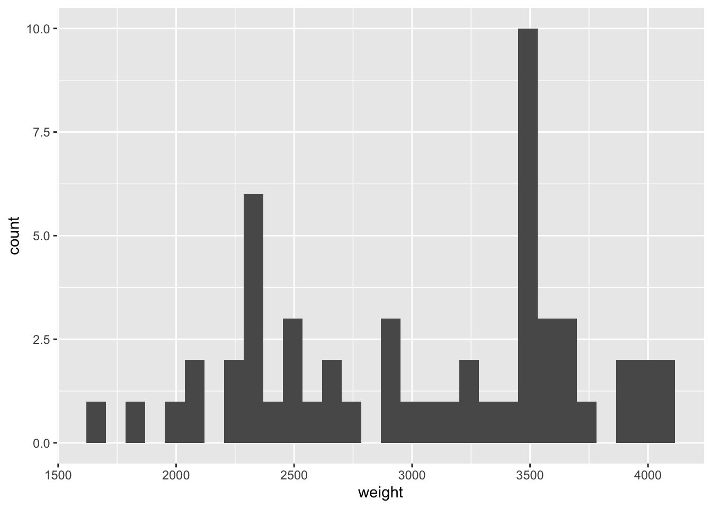

#This is an empty code chunk. The computer will not evaluate this green text with a leading # sign. It is called a comment. R Assignment 0
Introduction to R and RStudio
Introduction and goal:
The goal of this assignment is to get you familiarized with R, Rstudio and working in an RMarkdown file. These types of files have the suffix .rmd. You will have to read the text in this file to learn and type code into the code chunks. There is also a video of me working through this assignment available on canvas. At the end you will knit this file as a pdf and turn it in by uploading it to canvas. This file will be graded by your peers (and me) using an answer key provided after the assignment is due.
Most importantly if you find yourself getting stuck on this assignment post to the forums with a screen shot of where you are stuck or a question. Don’t get stuck for hours, just ask for help.
The yaml
The little bit of code at the top of this document, between some hyphens - - - , is called the yaml. The yaml for this document starts at line 1 and ends at line 9. The line numbers are on the left hand side of this document. If you don’t see them you may need to switch from visual mode to source mode. You can add your name to the yaml, but you don’t need to as this assignment will be peer graded, and canvas keeps track of the work you turn in.
A note on R Assignments
In MTH 142 you will get lots of practice doing statistics through homework assignments and R Assignments. You will have several R Assignments during this course that will help you do “modern” statistics with two R packages: the tidyverse and openintro. To load these libraries into RStudio you need to press the green triangle of the grey rectangle above (look around line 10 or 11). That grey rectangle is called a code chunk. We type code into chunks to get R to do things. The white space is for normal text.
In this R Assignment the goal is to warm up with some plotting and basic statistical functions. You will have 5 questions at the end which will be graded. Finally you will know if you have done your R Assignment correctly if you are able to knit without errors. (Getting errors is normal and common. If you are unable to fix them, go to office hours, tutoring, or post a screen shot to the discussion). Turn in the rendered .pdf to canvas before the due date. You will grade your peers’ R Assignments, as such late R Assignments are not accepted. One R Assignment will be dropped. Good luck.
The RStudio Interface
This platform your are working in is called Rstudio. In my lectures you will hear words like: console, r-markdown, and environment pane. Take a moment to get to know more about the four main panes of RStudio.See this site for info on the panes. If you watch the video for this assignment I will point the panes out to you.
Part 1 Code Chunks
Code chunks are grey and look like this:
To make a new chunk you can copy and paste the one above, click on the little green square with a c on the upper right, or manually type {r} then. Those symbols are called “back ticks” and they live above the tab key on your keyboard.
To run a code chunk you press the little green triangle. (You should have already done this to load the tidyverse and openintro packages, if you haven’t, do it now).
Part 2 Look at Data
To look at data you can simply type the name of the data frame into a code chunk. Let’s look at cars93.
cars93# A tibble: 54 × 6
type price mpg_city drive_train passengers weight
<fct> <dbl> <int> <fct> <int> <int>
1 small 15.9 25 front 5 2705
2 midsize 33.9 18 front 5 3560
3 midsize 37.7 19 front 6 3405
4 midsize 30 22 rear 4 3640
5 midsize 15.7 22 front 6 2880
6 large 20.8 19 front 6 3470
7 large 23.7 16 rear 6 4105
8 midsize 26.3 19 front 5 3495
9 large 34.7 16 front 6 3620
10 midsize 40.1 16 front 5 3935
# ℹ 44 more rowsIf you get a red message : “Error: object ‘cars93’ not found” You need to go back up to line 10 or 11 and click the green triangle to load the openintro package. The cars93 data lives in the openintro package.
You should see a spreadsheet-looking-grid called a dataframe. It has 6 variables: type, price, mpg_city, drive_train, passengers, and weight. We will discuss more on variables in the next few assignments and readings.
Where does the data come from? What are the units for price and weight? To answer these questions we can use the ? operator to pull up the documentation of this data. The chunk below does this for you. Run the chunk below by pressing the green triangle.
# This will bring up the cars93 documentation in the help menu to the right.
?cars93The documentation is mediocre for this cars93 dataset. It says price is in dollars, but I think it means 1000s of dollars. Weight is in pounds. It does say the data is from 1993, and was published in the Journal od Statistics Education.
It also says there are 54 observations in the dataset which means 54 cars represented in the data. Each observation is one row. Each row is information on one car. This is a tidy layout for data.
Part 3 Functions
There are several functions we will use during this course. Most of them are listed on the cheat sheet. You may want to book mark this website. Let’s first look at the mean() function.
A mean is one type of statistic. It shows the center of the data. It is also referred to as the average. We can tell R to calculate the mean of the weights of these cars with the mean() function:
# This calculates the mean weight of the cars in the data. Click the green triangle to run the chunk.
mean(cars93$weight, na.rm = TRUE)[1] 3037.407The $ tells R you are only interested in one variable, in this case the weight variable. We need the second argument “na.rm=TRUE” to tell R that if there is missing data throw that one observation out before calculating the mean. It doesn’t hurt to always include “na.rm= TRUE” when calculating the mean.
Its important to note that you can only find the mean of numeric data. We cannot find the mean of the “type” variable because the “type” variable is categorical. More on this in future readings.
Part 4 Plotting
When getting acquainted with data there are several different plots that we will look at to help us visualize data. One plot that is useful for visualizing numeric data is the histogram. Let’s plot a histogram showing the cars’ weight by running the chunk below.
# This is code for a histogram
ggplot(data = cars93)+
geom_histogram(mapping = aes(x= weight))`stat_bin()` using `bins = 30`. Pick better value with `binwidth`.
Every time we make a plot we will put our data into the ggplot() function as above. The second line tells R what kind of plot we want to make, it is called a geom. We make about 5 geoms in this class and there are examples of them on the cheat sheet. Notice that these two functions are connected with a plus (+) symbol.
Practice
The following problems will be graded by your peers. You will be looking at a new dataset called cars04. All problems are similar to those discussed above. If you need help check out the examples above first. If you are stuck for a few minutes post a screenshot to the discussion forum or come to office hours. I usually reply to posts within 24 hours, unless its the weekend. Whatever happens don’t get stuck for hours, that’s no fun.
Make a chunk below and use it to view cars04.
In the chunk below use the ? operator to take a look at the documentation for cars04. Type the code in the chunk, but type your answers to the questions outside of a chunk in the whitespace.
2a. How many cars are in this data frame?
2b. How many variables are in this data frame?
There is a statistic called the median. It is the midpoint of the data. In a new chunk tell R to calculate the median of the msrp variable. hint: the format is almost the same as finding the mean() above, keep in mind we are considering cars04 data.
Make a histogram of the msrp variable. hint: There is nothing wrong with copy and pasting the code from above then editing it for the cars04 data.
Nice work on the 4 parts above. You’re almost done.
- This is not really an exercise, but something you have to do once. You have to install tinytex on your instance of RStudio. Tinytex helps us turn .rmd files into .pdf files. You will never have to do this again for this class. Carefully run the chunks below to install Tinytex.
First see if you have tinytext. If the output below is false then you do not have tinytex installed and you need to go to the next chunk.
tinytex::is_tinytex()If you got a false, you need to install tinytex. Run the chunk below. This takes a few moments.
#This installs tinytex
tinytex::install_tinytex()We need to restart before we check again to see if you have successfully installed tinytex. Go to the menu above to Session > Restart R. Then run the chunk below. Hopefully you get “true” and you can skip to part 6.
tinytex::is_tinytex()Don’t run the chunk below if you just got True, skip to part 6. If you do not get true, don’t worry, there’s a backup method to install. Run the chunk below.
#This is the backup
install.packages("tinytex")Run the chunk below to hopefully get true. If you do not get true, try to restart and run the chunk below again. If that doesn’t work please send me a message in the forums.
tinytex::is_tinytex()- Assuming you successfully installed tinytex, you can now knit this file to a pdf then download this file to your computer and upload to canvas for grading. There are several ways to download this file, but here is one method:
Click “knit” at the top. If you get an error while knitting, post a screen shot of the problematic lines to the R_Assignment_0 discussion forum. You can also see me do this whole assignment in the video.
In the files pane to the right find the R_Assignment_0.pdf and click the box next to it.
Click the little gear icon and then export.
Find the file on your computer (probably in downloads) and upload it to canvas for peer grading.
Wooo you are warmed up to do statistics with R.
Resources for learning R and working in RStudio
If you are very interested, see the resources below. This is totally optional.
That was a short introduction to R and RStudio, but we will provide you with more functions and a more complete sense of the language as the course progresses.
In this course we will be using the suite of R packages from the tidyverse. The book R For Data Science by Grolemund and Wickham is a fantastic resource for data analysis in R with the tidyverse. If you are Goggling for R code, make sure to also include these package names in your search query. For example, instead of Goggling “scatterplot in R”, Goggle “scatterplot in R with the tidyverse”.
These may come in handy throughout the semester:
Note that some of the code on these cheatsheets may be too advanced for this course. However the majority of it will become useful throughout the semester.
This lab was modified from the labs on openintro stats